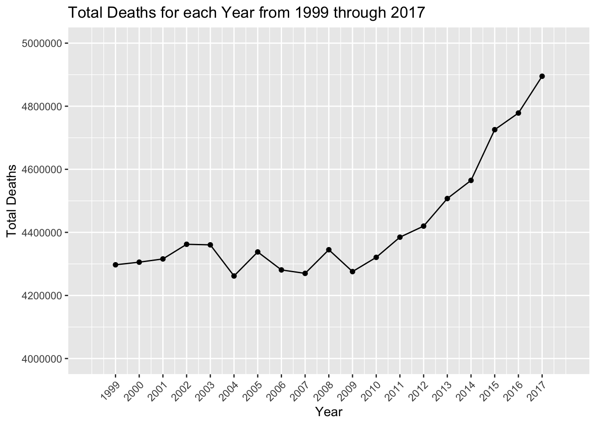

Code
library(dplyr)
library(readr)
library(dplyr)
library(forcats)
library(ggplot2)
library(scales)
library(tidyr)library(dplyr)
library(readr)
library(dplyr)
library(forcats)
library(ggplot2)
library(scales)
library(tidyr)lead_cod_2 = read_csv("NCHS_-_Leading_Causes_of_Death__United_States.csv")
# BY STATE
lead_cod_2_by_state = lead_cod_2 %>% filter(State != "United States")
# lead_cod_2_by_state
# LOOKING AT USA
lead_cod_2_USA = lead_cod_2 %>% filter(State == "United States")
#lead_cod_2_USA
# FILTER FOR 2008-2017
lead_cod_2_USA_from_2008 = lead_cod_2_USA %>% filter(Year >= 2008)
lead_cod_2_by_state_from_2008 = lead_cod_2_by_state %>% filter(Year >= 2008)####################################################
# "Total Aggregate Deaths by Cause from 1999 through 2017"
# Group to do a factor reorder
lead_cod_2_USA_from_2008_mod <- lead_cod_2_USA %>%
#filter(Year >= 2008) %>%
mutate(`Cause Name` = as.factor(`Cause Name`)) %>% # Ensure 'Cause Name' is a factor
group_by(`Cause Name`) %>%
summarise(Total_Deaths = sum(Deaths, na.rm = TRUE)) %>%
mutate(`Cause Name` = fct_reorder(`Cause Name`, Total_Deaths, .desc=TRUE)) %>%
ungroup()
# Now create the ggplot
ggplot(lead_cod_2_USA_from_2008_mod %>% filter(`Cause Name` != "All causes"), aes(x = `Cause Name`, y = Total_Deaths)) +
geom_bar(stat = "identity", position = "dodge") +
theme(axis.text.x = element_text(angle = 45, hjust = 1)) +
labs(x = "Cause Name", y = "Total Deaths", title = "Top 10 Causes of Deaths from 1999 through 2017")
#################################################### DEATHS INCREASING OVER THE YEARS
yearly_data <- lead_cod_2_USA %>%
group_by(Year) %>%
summarise(Total_Deaths = sum(Deaths, na.rm = TRUE))
# # Create a bar chart
# ggplot(yearly_data, aes(x = Year, y = Total_Deaths)) +
# geom_bar(stat = "identity", position = "dodge") +
# scale_x_continuous(breaks = 1999:max(yearly_data$Year), limits = c(1998, 2018)) +
# theme(axis.text.x = element_text(angle = 45, hjust = 1)) +
# labs(x = "Year", y = "Total Deaths", title = "Total Deaths per Year from 2008 Onwards")
# A time series plot
ggplot(yearly_data, aes(x = Year, y = Total_Deaths)) +
geom_line() + # Using geom_line for a time series plot
geom_point() + # Optionally add points to highlight each data point
scale_x_continuous(breaks = 1999:max(yearly_data$Year), limits = c(1998, 2018)) +
theme(axis.text.x = element_text(angle = 45, hjust = 1)) +
labs(x = "Year", y = "Total Deaths", title = "Total Deaths for each Year from 1999 through 2017") +
scale_y_continuous(breaks = seq(4e6, 5e6, by = 200000),
limits = c(4e6, 5e6))
# "Total Deaths by Cause and Year from 2008-2017 Broken Down By Year"
lead_cod_2_USA_from_2008_with_year <- lead_cod_2_USA_from_2008 %>%
group_by(Year, `Cause Name`) %>%
summarise(Total_Deaths = sum(Deaths, na.rm = TRUE)) `summarise()` has grouped output by 'Year'. You can override using the
`.groups` argument.cause_order = c("All causes","Heart disease","Cancer","Stroke",
"CLRD", "Unintentional injuries","Alzheimer's disease",
"Diabetes", "Influenza and pneumonia", "Kidney disease","Suicide" )
lead_cod_2_USA_from_2008_with_year$`Cause Name` <- factor(lead_cod_2_USA_from_2008_with_year$`Cause Name`, levels = cause_order)
# Fill = Year
ggplot(lead_cod_2_USA_from_2008_with_year, aes(x = `Cause Name`, y = Total_Deaths, fill = as.factor(Year))) +
geom_bar(stat = "identity", position = "dodge") +
scale_fill_brewer(palette = "Set1") +
theme(axis.text.x = element_text(angle = 45, hjust = 1)) +
labs(x = "Cause Name", y = "Total Deaths", fill = "Year",
title = "Deaths by Cause and Year from 2008-2017 Broken Down By Year")Warning in RColorBrewer::brewer.pal(n, pal): n too large, allowed maximum for palette Set1 is 9
Returning the palette you asked for with that many colors
We are going to categorize types of death in 4 groups: Chronic Diseases, Acute Illnesses, Mental Health, Accidents. First, let’s observe the evolution across time.
#Let's modify column names, filter out United States and All causes, as they are redundant for this anaylsis.
df = lead_cod_2 |> filter(State != "United States")
df$Cause <- df$`Cause Name`
df$Age <- df$`Age-adjusted Death Rate`
df = df |> select(-`113 Cause Name`) |> select(-`Cause Name`) |> select(-`Age-adjusted Death Rate`)
df = df |> filter(Cause != 'All causes')
#Here we create a category column according to the type of death
df$Category = ifelse(df$Cause %in% c("Heart disease", "Diabetes", "Alzheimer's disease", "Cancer", "CLRD", "Kidney disease"), "Chronic",
ifelse(df$Cause %in% c("Stroke", "Influenza and pneumonia"), "Acute",
ifelse(df$Cause == "Suicide", "Mental", "Accident")))
#Aggregating by year and category
df_grouped = df |> group_by(Year, Category) |> summarise(TotalDeaths = sum(Deaths, na.rm = TRUE), .groups = 'drop')
color_friendly = c("#E69F00", "#56B4E9", "#009E73", "#F0E442")
#Time series
ggplot(df_grouped, aes(x = Year, y = TotalDeaths, group = Category, color = Category)) +
geom_line(size = 1.5) + theme_minimal() +
labs(title = "Deaths by Category Over Time", x = "Year", y = "Deaths", color = "Category") +
scale_color_manual(values = color_friendly) +
scale_y_continuous(labels = scales::comma, breaks = scales::pretty_breaks(n = 8)) +
scale_x_continuous(breaks = scales::pretty_breaks(n = 8))Warning: Using `size` aesthetic for lines was deprecated in ggplot2 3.4.0.
ℹ Please use `linewidth` instead.
The time series plot helps us have an understanding of the magnitude of each category and the evolution across time. We can see that Chronic causes are around 30x the minor variety (Mental), making it challenging to analyze the growth of smaller series. Although it is clear that since 2010, Chronic causes have been increasing, we will create a cumulative chart to understand the evolution of each category.
A cumulative percentage time series chart will help us compare relative changes of different categories from a common starting point.
#First we have to calculate the percetage change for each period, and the accumulate it through the years:
df_wide <- df_grouped |> pivot_wider(names_from = Category, values_from = TotalDeaths, values_fill = list(TotalDeaths = 0))
df_wide <- df_wide |> mutate(across(-Year, ~(. / lag(.) - 1)))
df_wide[is.na(df_wide)] <- 0
df_wide <- df_wide |> mutate(across(-Year, ~cumprod(1 + .) - 1))
df_wide <- df_wide |> pivot_longer(cols = -Year, names_to = "Category", values_to = "CumulativeGrowth")
ggplot(df_wide, aes(x = Year, y = CumulativeGrowth, color = Category)) +
geom_line(size = 1.5) + theme_minimal() +
labs(title = "Cumulative Growth of Categories Over Time", x = "Year", y = "Cumulative Growth") +
scale_y_continuous(labels = scales::percent_format(), breaks = scales::pretty_breaks(n = 8)) +
scale_x_continuous(breaks = scales::pretty_breaks(n = 8))+
scale_color_manual(values = color_friendly)
With the cumulative percentage evolution of deaths we can better understand the trends over time. We can make the following observations:
Deaths from chronic causes is the category that has remained most stable over time. This is despite the fact that the previous graph seemed to say that this category was the one that grew the most (an effect produced by the difference in magnitudes). However, there has been an upward trend since 2010.
Deaths from acute diseases showed a decreasing trend until 2012, but then began to grow again
Accidents and deaths from suicide (Mental) are growing at uncontrolled rates.
From this arise two interesting questions to ask:
To answer the first question, we can build a Cleveland plot to understand which states are leading:
# Filter the data for the specified conditions
df_rank <- df %>% select(-Age)|> filter(Year %in% c(1999, 2017), Category == "Mental")
# Calculate the percentual difference change from 2000 to 2017 for each state
df_rank <- df_rank %>%
pivot_wider(names_from = Year, values_from = Deaths) |>
mutate(PercentChange = `2017`/`1999`-1) |>
arrange(desc(PercentChange))
# Create a vertical bar chart
ggplot(df_rank, aes(x = PercentChange, y = reorder(State, PercentChange))) +
geom_point(size = 3, color = "brown") +
geom_point(aes(color = "green"), size = 2) +
labs(title = "Mental Deaths %Chg. - 1999 to 2017", x = "Percentual Change", y = 'State') +
theme_bw() +
theme(panel.grid.major.x = element_blank(),
panel.grid.minor.x = element_blank(),
panel.grid.major.y = element_line(colour = "grey60", linetype = "dashed"))+
scale_x_continuous(labels = scales::percent_format(), breaks = scales::pretty_breaks(n = 8))+
theme(legend.position = "none")
#https://r-graphics.org/recipe-bar-graph-dot-plotWe can see that Utah, Idaho and North Dakota have seen the largest increase, while Delaware, Rhode Island and Louisiana the smallest.
# Filter the data for the specified conditions
df_rank <- df %>% select(-Age)|> filter(Year %in% c(1999, 2017), Category == "Accident")
# Calculate the percentual difference change from 2000 to 2017 for each state
df_rank <- df_rank %>%
pivot_wider(names_from = Year, values_from = Deaths) |>
mutate(PercentChange = `2017`/`1999`-1) |>
arrange(desc(PercentChange))
# Create a vertical bar chart
ggplot(df_rank, aes(x = PercentChange, y = reorder(State, PercentChange))) +
geom_point(size = 3, color = "darkblue") +
labs(title = "Accident Deaths %Chg. - 1999 to 2017", x = "Percentual Change", y = 'State') +
theme_bw() +
theme(panel.grid.major.x = element_blank(),
panel.grid.minor.x = element_blank(),
panel.grid.major.y = element_line(colour = "grey60", linetype = "dashed"))+
scale_x_continuous(labels = scales::percent_format(), breaks = scales::pretty_breaks(n = 8))+
theme(legend.position = "none")
#https://r-graphics.org/recipe-bar-graph-dot-plotNow we want to understand the underlying drivers of the changes across time for acute type of deaths.
#First we manipulate the data to analyize Acute deaths only
df_acute <- df |> filter(Category == 'Acute') |> select(Year, Cause, Deaths)
df_acute = df_acute |> group_by(Year, Cause) |> summarise(TotalDeaths = sum(Deaths, na.rm = TRUE), .groups = 'drop')
df_acute <- df_acute |> pivot_wider(names_from = Cause, values_from = TotalDeaths, values_fill = list(TotalDeaths = 0))
df_acute$Acute = df_acute$`Influenza and pneumonia` + df_acute$Stroke
#Now we can understand the changes in trends by calculating percentual changes:
df_acute <- df_acute |> mutate(across(-Year, ~(. / lag(.) - 1)))
df_acute[is.na(df_acute)] <- 0
df_acute <- df_acute |> mutate(across(-Year, ~cumprod(1 + .) - 1))
df_acute <- df_acute |> pivot_longer(cols = -Year, names_to = "Dim", values_to = "CumulativeGrowth")
df_acute <- df_acute |> mutate(Dim = if_else(Dim == "Acute", "Total Acute", Dim))
#Now we can plot the evolution:
ggplot(df_acute, aes(x = Year, y = CumulativeGrowth, color = Dim)) +
geom_line(size = 1.5, aes(linetype = ifelse(Dim == "Total Acute", "solid", "dashed"))) +
labs(title = "Breakdown of Acute Deaths Growth", x = "Year", y = "Cumulative Growth") +
scale_y_continuous(labels = percent_format(), breaks = pretty_breaks(n = 8)) +
scale_x_continuous(breaks = pretty_breaks(n = 8)) +
scale_color_manual(values = c('brown', 'blue', 'Black')) +
guides(linetype = FALSE) +
theme(legend.position = "bottom")Warning: The `<scale>` argument of `guides()` cannot be `FALSE`. Use "none" instead as
of ggplot2 3.3.4.
We can observe the following:
Deaths by acute illnesses started to decrease after 2002, first led by a sharp decrease in Strokes. Still, in 2003, we also observed a declining rate of Influenza and Pneumonia, contributing to the overall trend.
From 2008 to 2017, the deaths caused by Influenza and Pneumonia were range-bound, although, with some volatility, they stayed somewhat constant.
However, Strokes started to pick up in 2013, which explains the overall trend observed in deaths by Acute illnesses.